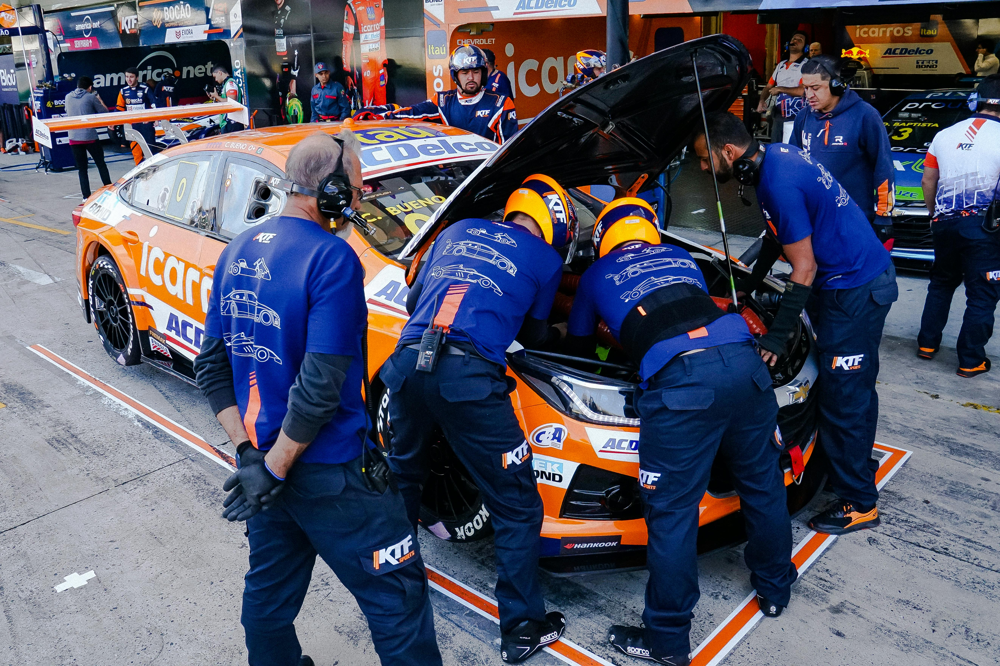

Nos Services
Diagnostic complet
Un contrôle général pour détecter tout problème de votre véhicule.
Vidange moteur
Changement de l'huile moteur et du filtre pour un moteur en pleine forme.
Freinage & pneus
Vérification et remplacement des freins, pneus, et équilibrage.
Batterie & électricité
Test, remplacement de batterie et diagnostic électrique complet.
À propos de nous
Ndiath Repair est un garage automobile professionnel dédié à l'entretien, la réparation et la sécurité de votre véhicule. Notre équipe de mécaniciens expérimentés vous garantit un service de qualité, rapide et fiable. Nous nous engageons à offrir à nos clients un accompagnement personnalisé, des conseils utiles et une transparence totale sur les interventions effectuées.
Contactez-nous
Adresse : Garage Ndiath Repair, Dakar, Sénégal
Téléphone : +221 77 123 45 67
Email : contact@ndiathrepair.sn